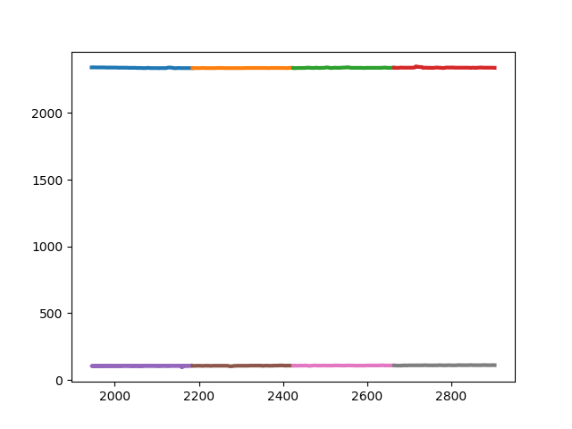
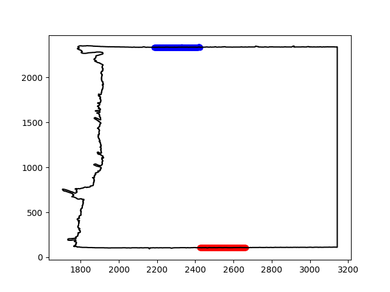

Tutorials#
The following set of tutorials demonstrates the basic usage of the ForensicFit package. The examples illustrate how to apply the preprocessing method for various approaches.
Preprocessing#
Initially, we will describe the steps required to process a single image. After that, we will proceed to discuss the processing of directories containing multiple images. Each grayscale image consists of a grid of pixels, where each pixel holds a value ranging from 0 to 255, representing the specific gray shade of the pixel.
1. Single image processing#
1.1. Loading the Image and Displaying It#
Given the path to the image, ForensicFit will create a Tape object.
Tape is instantiated by providing a numpy array. Alternatively, one can use the from_file method to load the image from a file.
>>> import forensicfit as ff
>>> tape = ff.core.Tape.from_file(fname='L001.tiff')
tape is a Tape object with various properties and methods. In this section,
we will explain the usage of each method and property. Tape inherits from the class Image.
Before discussing each method, let’s list the input parameters of this class.
A comprehensive description of each parameter is provided in the API package section. To display the image, we can use the show or the plot method.
We can save the image by including the argument savefig when plotting.
>>> tape = ff.core.Tape.from_file(fname='L001.tiff')
>>> tape.plot()
>>> tape.plot(savefig='L001.png')
gaussian_blur is an important filter applied at the beginning of this class.
This filter is used to reduce image noise and facilitate boundary detection.
The optimal value typically depends on the amount of noise the scanner introduces to the image.
This parameter defines the window of pixels where the filter is applied. The default value for this parameter is gaussian_blur=(15,15).
To illustrate the effects of this filter, we choose a large window to exaggerate the impact. The window must always be constructed using odd numbers.
Usage:
tape_image = forensicfit.preprocess.TapeImage('LQ_775.tif',
gaussian_blur=(101,101))
1.2. Splitting the image vertically#
Sometimes one does not need one side of the image. To address this issue split
parameter is implemented.One has to turn on the split paramter by split=True,
Then select the side of the image that is important to us ('L' for left or 'R' for right)
by split_side='L' (important: do not forget that this parameter has to a python string), and
finally one has to choose the split_position. split_position can only be a number between 0
and 1. for example if split_position=0.5, the image will be divided in the half way line. The defaults are
split=False, split_position=0.5 and split_side='L'.
Let’s also view the split image by using the show() method.
Usage:
tape_image = forensicfir.TapeImage(fname='LQ_775.tiff',
split=True,
split_side='L',
split_position=0.5)
tape_image.show(cmap='gray')

1.3. Finding the tilt of the image#
During the scanning process one might not position the image exactly parallel to the
horizontal line. The property of image_tilt can calculate the tilt of the tape. To calculate
this number the algorithm finds the boundaries at the top and the bottom of the image.
Then each line is divided in 6 segments(our experience showed that 6 is segments usually works good).
The first and the last segments are discarted to avoid noise close to the edge. The the slop and standard
deviation(in y direction) is calculated with a linear fit. The two
segments with the least are selected from the top and bottom. Furthur more the average angle
by each line is reported in degrees.
Usage:
print(tape_image.image_tilt)
0.12844069008595374
If one wants to monitor all of the steps of the selection of the best segment for angle calculation,
One can use the get_image_tilt(plot=True), with the plot parameter turn on(True).
Usage:
tape_image.get_image_tilt(plot=True)
This method will produce two plots one with all of the segments shown in diferent colors,
and one with the two segments with the least standard deviation, plotted over the detected boundary.
1.4. Plot Boundaries#
This class automatically(using opencv) detects the boundaries. To plot this boundary
one has to use, plot_boundary(color='red'). As it’s self explanatory the color
parameter changes the color of the boundary. To plot this boundary one has to plot
the image first then use the plot boundary similar to the following example.
Usage:
tape_image.show(cmap='gray')
tape_image.plot_boundary(color='red')
1.5. Auto Crop in Y direction#
auto_crop_y() will automatically crop the image based on the boundaries that it found.
To make this example more interesting we add a plot boundary function as well.
Usage:
tape_image.auto_crop_y()
tape_image.show(cmap='gray')
tape_image.plot_boundary(color='red')
1.6. Rotate Image#
As the name suggests This method will perform an rotation around the center of the image.
Usage:
tape_image.rotate_image(90)
tape_image.show(cmap='gray')
1.7. Coordinate Based#
This method will return a 2 dimentional array of coordinates of points on the edge.
The most important parameter for this method is npoints representing the number of
points in the returned array. This method divides the edge into the small sections and
returns the average of each section as one point. if the parameter plot is set to true
the plots will be plotted on the main image. The following example contains 1000 points for
the resulting array.
Usage:
tape_image.coordinate_based(plot=True,x_trim_param=6,npoints=500)
1.8. Weft based#
In order to get as close as possible to a regular examination, this method was
added. This method will divide the edge of the image by the number of segments
defined by nsegments. If this value is chose to be as close as the number of
wefts in a specific tape, the segments will be close to separating the segments
by the wefts. There are three important paramters that can be passed on to this
method. window_backround and window_tape define the number of pixels
that are going to be considered from the edge towards the background and from the
edge towards the tape respectively. There two different approaches that one can
define the window, either the whole window is fixed for the whole image or the window
can moves to adjust the same amount of background and tape to be involve in the image.
This can be defined by dynamic_window equal to True or False. The
following example can illustrate the dynamic window better. The image on the left
represents dynamic=True and the image on the right represent dynamic=False.
Similar to the coordinate based, if one choose plot=True, one can oversee the
boundary and window selection by plotting the results.
Usage:
tape_image.weft_based(plot=True,dynamic_window=True,nsegments=39,
window_background=70,window_tape=300)
tape_image.weft_based(plot=True,dynamic_window=False,nsegments=39,
window_background=70,window_tape=300)
{kind=link}
{kind=link}
If nsegments is set to a small number, this approach can be looked at as a
big picture approach that can help improve the weft base approach.
1.9. Max Contrast#
This method makes a maximum contrast between the edge and the rest of the image.
The rest of the image is represneted by a white color(255) and the rest of the
image is represented by a black color(0). Similar to the weft based one can choose
the number of pixels included in the window_background and the wondow_tape.
window_backround and window_tape define the number of pixels
that are going to be considered from the edge towards the background and from the
edge towards the tape respectively. There two different approaches that one can
define the window, either the whole window is fixed for the whole image or the window
can moves to adjust the same amount of background and tape to be involve in the image.
Similar to the coordinate based, if one choose plot=True, one can oversee the
boundary and window selection by plotting the results. In the following example
we choose the default for the window_background and window_tape.
Usage:
tape_image.max_contrast(plot=True)
{kind=link}